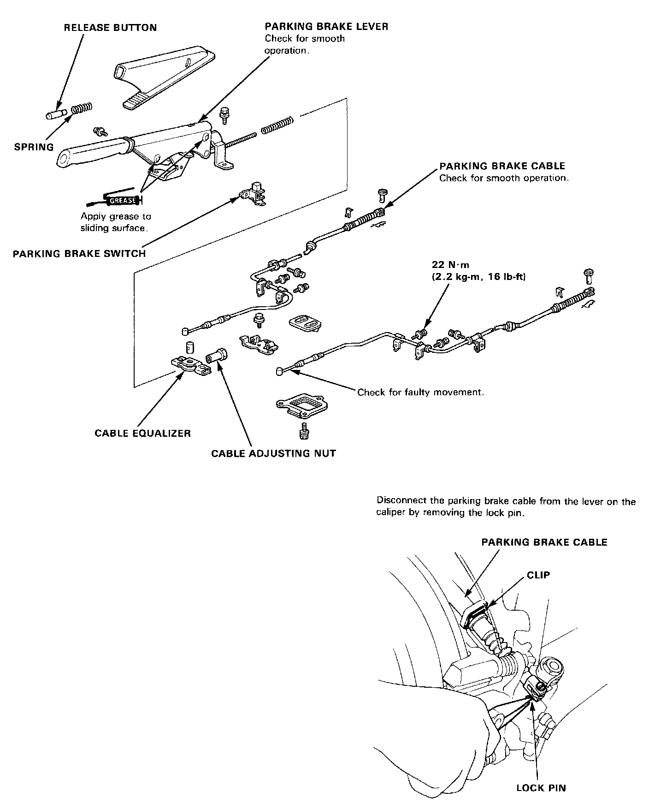

Operation CHARM
: Car repair manuals for everyone.
Home
>>
Acura
>>
1992
>>
Integra L4-1678cc 1.7L DOHC (VTEC) FI
>>
Repair and Diagnosis
>>
Brakes and Traction Control
>>
Brake Pedal Assy
>>
Service and Repair
Brake Pedal Assy: Service and Repair

Parking Brake
Disassembly and Reassembly